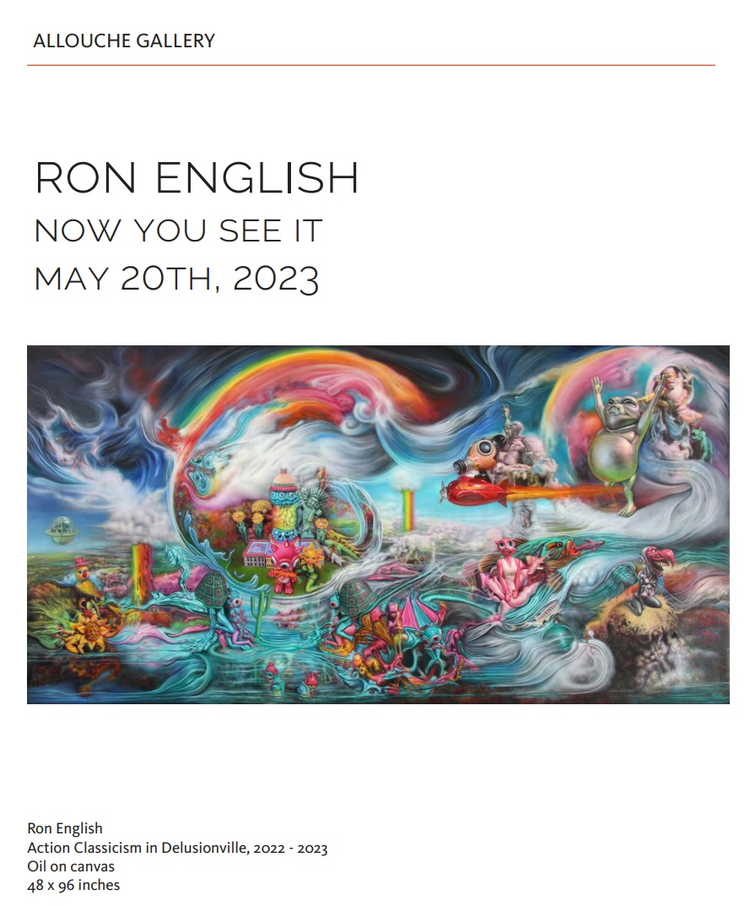
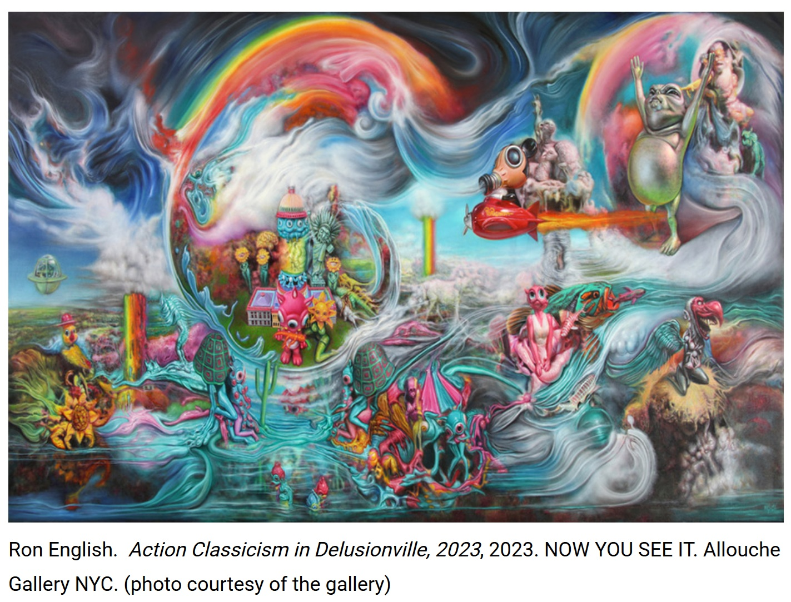
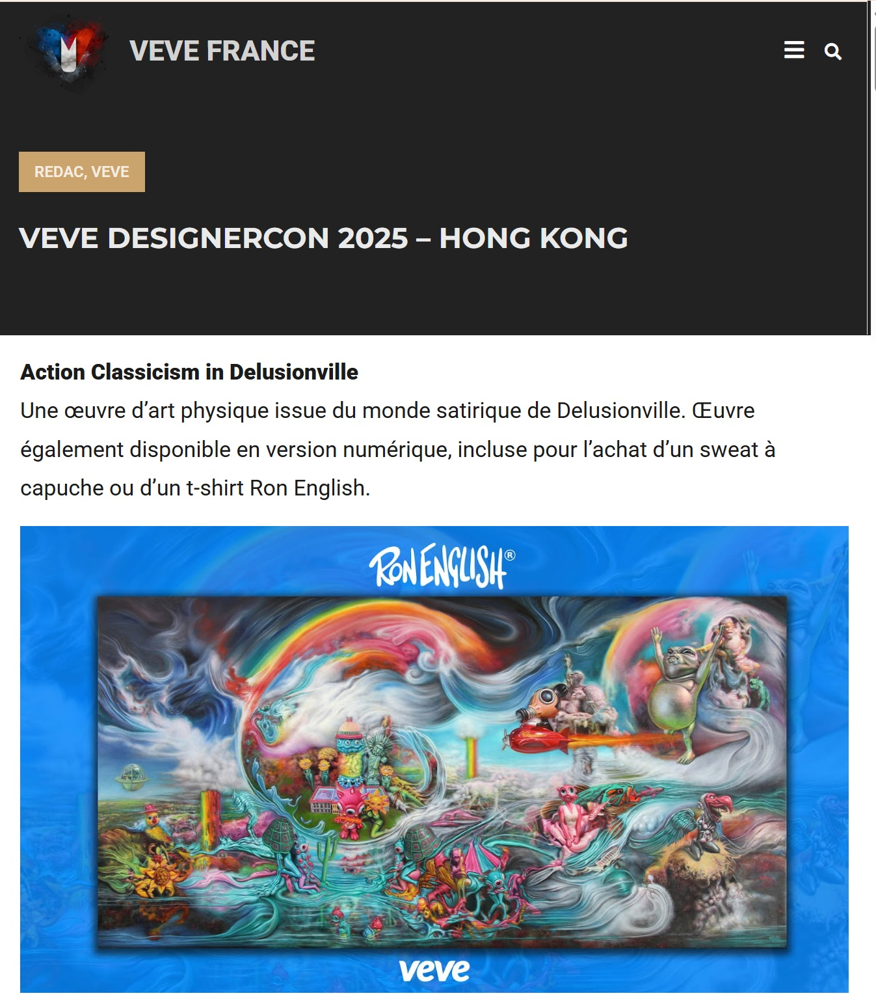
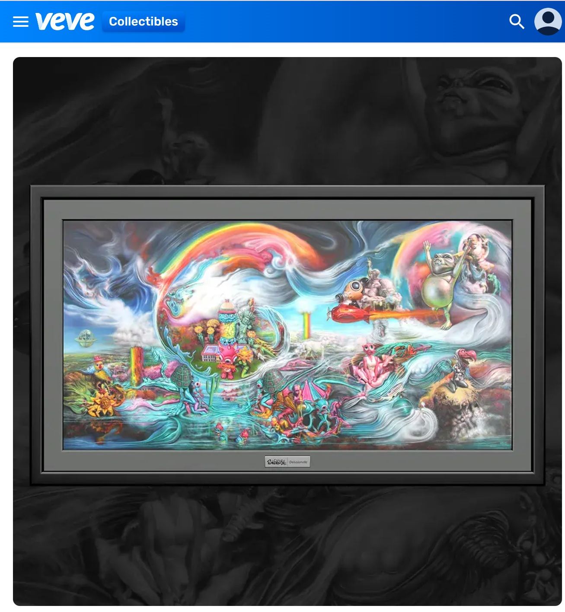

Exhibitions
Now You See It, Allouche Gallery, New York, New York, US, May 20–July 4, 2023.
Notes
This work appears in the online PDF catalogue for Ron English: Now You See It (Allouche Gallery, 2023), available here, accessed April 12, 2026.
It also appears in “Ron English – “Now You See It” During Spring Art Fair Blitz,” Brooklyn Street Art, May 11, 2023, available here, accessed April 16, 2026.
The image later appeared in VeVe France’s post on VeVe’s DesignerCon 2025 - Hong Kong promotion, where Action Classicism in Delusionville is identified as a framed digital artwork available on the VeVe app via redemption card with select Ron English merchandise, available here, accessed April 16, 2026.
It also appears on VeVe’s digital collectible page for Ron English’s Action Classicism in Delusionville, where indexed metadata identifies it as a Secret Rare, Con Exclusive digital collectible with 133 editions, Drop Date 04 Oct 25, 06:00pm, List Price 0.00, Market Fee 2.50%, Season 10, Daily MCP Points 6, License: Ron English, Brand: Ron English’s Popaganda, and Series: Action Classicism in Delusionville, available here, accessed April 16, 2026.
Ancillary Documentation



